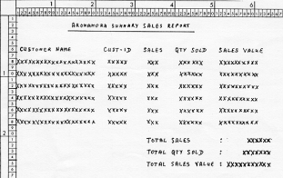

Introduction
Aromamora PLC is a company which sells essential oils to Aromatherapists, Health Shops,
Chemists and other mass users of essential oils. Every month, details of sales to these
customers are gathered together into a Sales File (SALES.DAT). A program is required which
will produce a summary report from this file showing the quantity (in millilitres) and value
of the essential oils purchased by each customer.
Although Aromamora sells both base and essential oils, the report should summarize sales of
essential oils only. The report should be printed, sequenced on ascending Customer-Name.
The Sales File
The Sales File contains details of sales to all Aromamora customers. It is a validated, unsorted sequential file. The records in the Sales File have the following description:
|
Field |
Type |
Length |
Value |
Customer-Id |
9 |
5 |
0-99999 |
| Customer-Name | X |
20 |
- |
| Oil-Id | X |
3 |
B01-B10 OR E01-E30 |
| Unit-Size | 9 |
1 |
2/5/9 |
| Units-Sold | 9 |
3 |
1 - 999 |
Notes
Oil-Ids that contain an "E" represent essential oils. Those that contain a "B" represent
base oils.
Unit-Size is the size in millilitres of the oil container purchased.
Units-Sold is the number of units purchased.
The quantity of oil sold for a particular sale is :- Unit-Size * Units-Sold.
The value of a sale is :- Qty-Sold * Cost-Per-Ml.
The Cost-Per-Ml is obtained from a 30 element pre-defined table of values (see the program
outline for details). The first element of the table contains the cost of oil E01, the
second - oil E02 and so on. Each element of the table has the following description :- PIC
99V99.
The Sales Report
Numeric values must be printed using comma insertion and either zero suppression or the floating currency symbol. There is no need to worry about controlling the change of page, so no line count need be kept and the headings never have to be printed again.
See the print specification below for more report format details.
| Line 1-6 | Report Heading. To be printed on the first page of the report only. |
| Line 8 |
Detail line showing the Customer-Name. Preceded by one blank line. Sales is a count of the number of essential oil sales records for the customer. Qty-Sold is the sum of the quantities of this oil (in millilitres) sold to this customer. Sales-Value is the value of the oils sold to this customer. |
| Line 21-25 |
Final totals. These are the sum of the Customer-Totals. To be printed at the end of the report. Preceded by 2 blank lines. |

Click to view full version
{kind=link}